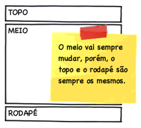
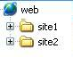

Abaixo todos os posts da categoria “desenvolvimento”
Post
Entenda como funciona o PHP! (Do código fonte até a renderização)
Esse artigo é quase uma tradução fiel do artigo How PHP Executes from Source Code to Render de Thomas Punt, revisado por Younes Rafie.
No original o autor coloca os pedaços de códigos para você testar por conta. Aqui, além disso, adicionei como rodar os mesmos com um único comando, usando docker. Assim você não precisa de muito esforço para ver os exemplos.
Criei uma imagem no dockerhub com tudo necessário para rodar os exemplos desse artigo.
Post
Ferramentas de otimização de imagem via linha de comando
Na última semana durante um trabalho de otimização de performance para um site, chegou a hora das imagens. Muitas imagens antigas de produtos e também peças de layout que tinham bom espaço para ganho. Diminuir o tamanho dos arquivos sem perder tanto as cores e a qualidade gráfica das imagens.
Eu estava procurando por ferramentas para otimizar as imagens de uma maneira que eu pudesse fazer diretamente no servidor, via terminal. Dessa forma eu não precisaria fazer o download de tudo para minha máquina, depois subir novamente e nem nada similar. Apenas um Backup no próprio servidor e rodar os comandos.
Post
Quer estudar uma coisa nova? Docker te ajuda!
Sempre que vamos estudar algo em tecnologia, em programação temos a complexidade do ambiente para resolver. Para um simples Hello World precisamos de um ambiente e a complexidade da criação dele pode desanimar os iniciantes (Por isso o JavaScript vem a ser execelente para os iniciantes!).
Mas para ajudar com isso temos os containers e uma ferramenta excelente para trabalhar com eles, o Docker. Diferente de uma máquina virtual, o container vai abranger apenas o que é necessário para rodar sua aplicação, sem precisar de um SO completo.
Vamos dizer então que você quer estudar algo diferente, um banco de dados de grafos e vamos entender como o Docker vai te ajudar com isso.
Post
Como foi 2018 e o que você pode esperar de mim para 2019
Em minha carreira, graças a excelentes mestres e amigos no meu caminho (cito alguns no final), eu acabei evoluindo e subindo de cargo muito rapidamente. Em poucos anos como desenvolvedor eu fui promovido para Analista e assim se seguiu para Líder de desenvolvimento e chegando até Gerente de TI.
Em uma dessas promoções eu cheguei a pedir demissão, pois queria me preparar melhor antes de liderar ou dar instruções para um time. Mas depois aceitei os desafios.
Nesses períodos eu acabei colocando a mão em código muito menos do que eu esperava. Sempre senti falta, fazia uma coisinha aqui - ali, mas tinha outras responsabilidades. E ressalto que nunca deixei de buscar sempre fazer um grande trabalho independente da posição.
Em 2018 muitas coisas estavam acontecendo, minha filha estava crescendo, problemas de saúde do lado da família da minha esposa e o início e crescimento de uma insatisfação no trabalho da época. Isso somado a excelentes conversas com Matheus Gontijo, me levaram a pedir demissão e partir para um trabalho de casa, remoto, fora do Brasil.
Post
Criando seu Container com Dockerfile
Foi uma longa jornada até criarmos nosso container da maneira que queríamos flaviosilveira.com/2017/criando-seu-container-nginx-php-1/ e flaviosilveira.com/2017/criando-seu-container-nginx-php-2/. Ainda assim temos alguns pontos chatos como o de ter de iniciar o Nginx e o PHP-FPM Manualmente.
Felizmente há uma maneira mais simples de montarmos nosso container e ainda fugindo do trabalho manual. Vamos usar Dockerfile!
Dockerfile é um arquivo onde colocamos tudo o que precisamos para nosso container. De qual container ele se origina, o que você quer instalar, que serviços quer rodar.
Se você está acompanhando a série de artigos sobre docker, basicamente vamos traduzir o que fizemos nos dois artigos anteriores para um Dockerfile.
No decorrer deste artigo vou me referir aos 2 anteriores praticamente o tempo todo. Caso você não os tenha lido, pode ficar um pouco fora de contexto para você, mas nada que vá comprometer o entendimento final.
Post
Criando seu Container NGinx + PHP (Parte 1)
Fala pessoal!
Esse já é nosso terceiro artigo sobre docker:
- Já vimos como podemos iniciar com o Docker no artigo http://flaviosilveira.com/2016/comece-com-docker.
- Em seguida vimos como iniciar um Container com PHP 7 e usar seu servidor embutido (built in) em http://flaviosilveira.com/2016/docker-php7-e-php-built-in.
Com isso já conseguimos trabalhar com o PHP, mas o servidor Built-in não é a maneira ideal para isso. Como podemos colocar o PHP como um todo rodando em um container Docker para a gente? Vamos responder a isso.
Para quem não leu os primeiros dois artigos citados acima, recomendo. Acredito que vá ficar melhor de entender o que vem abaixo. Temos bastante tecnês.
Post
Criando seu Container NGinx + PHP (Parte 2)
No final da parte 1 desse artigo, onde montamos um container com Debian, NGinx e PHP, nos deparamos com o seguinte: Se pararmos nosso container e precisar novamente de NGinx + PHP, teremos que partir do zero.
Para evitar isso, vamos criar nossa própria imagem, uma imagem que vai guardar o que fizemos até agora.
Post
Microserviços
Muito anda se falando sobre microserviços e trago para vocês minha experiência de como começamos a trabalhar dessa forma aqui na LojasKD.
Assim como meu post anterior sobre Ansible e automação, esse assunto também faz parte de uma palestra que apresentei durante 2016, um dos meus grandes orgulhos desse ano que encerro com esse post.
###Microserviços - O que é? Para falar sobre microserviços eu sempre empresto a frase do @tiagodolphine: “O menor possível, porém grande o suficiente para representar seu domínio”.
Post
Ansible - Desperte a automação em você
{% raw %} Automação vem se tornando um tema essencial em empresas que querem crescer com mais cérebro e menos braço. Aquela tarefa que você repete mais de duas vezes já deve ser pensada em uma maneira de ser automática, concorda?
No universo do desenvolvimento, quantas são as tarefas que repetimos quando se trata de máquinas? Deploys, extração de logs, instalação e configuração de ferramentas, etc. Ansible pode ser a ferramenta que vai te ajudar a automatizar tudo isso.
Post
Docker, PHP7 e PHP Built In
No artigo anterior (Comece com Docker!) descrevemos juntos alguns passos iniciais com o Docker. Criamos containers, usamos attached, detached, entramos, saímos, executamos comandos. Se você não está familiarizado a isso, te convido a visitar o artigo.
Sendo repetitivo, meu desejo com esses artigos sobre docker é passar para as pessoas as facilidades que containers nos dão para experimentar tecnologias. Que tal hoje experimentarmos o PHP7? Se você não teve a oportunidade de mexer um pouco com ele o Docker está aqui para facilitar as coisas. E para facilitar ainda mais vamos usar o recurso Built In, presente desde a versão 5.4, que nos traz um servidor web embutido. Assim não vamos precisar instalar nada mais.
Post
Comece com Docker
Tenho dois posts envolvendo vagrant aqui no blog que ainda são certo sucesso de acessos. Vagrant Fácil e Útil que dá uma introdução ao Vagrant com um exemplo simples e Vagrant, PuPHPet E PHP Built In que apresenta o PuPHPet como um facilitador para criar ambientes e um experimento com o PHP Built In. O primeiro artigo é de 2012, o segundo de 2013. Passados três anos e vendo a busca disso não diminuir, quero trazer para quem ainda não conhece o Docker.
Post
Vagrant, PuPHPet E PHP Built In
Fala pessoal.
Hoje trago uma dica simples, talvez sem uma utilidade de pronto, mas que pode ser interessante para algum estudo.
O que é Vagrant?
Para quem ainda não conhece, Vagrant é uma ferramenta que vem revolucionando os ambientes de desenvolvimento.
Se você ainda não sabe nada sobre essa ferramenta, confira o post que escrevi aqui no blog: http://flaviosilveira.com/2012/vagrant-facil-e-util/.
Post
Vagrant: Fácil E útil
Salve pessoal!
Hoje eu quero passar uma dica para fazer você parar com aquela desculpa “Na minha máquina tá funcionando”. Para isso vou apresentar para vocês o Vagrant http://vagrantup.com/.
O Vagrant é uma ferramenta que te ajuda na criação da infraestrutura para o seu projeto, usando para isso uma máquina virtual. Mas aí você pensa: “Uma máquina virtual para cada projeto?? Isso vai dar trabalho”. A grande jogada é que o Vagrant deixa muita coisa invísivel, deixando com que você se preocupe apenas com seu código. É uma máquina virtual reduzida e portável facilmente. Para cada projeto você pode deixar um ambiente diferente rodando, um com PHP 4, outro com PHP 5, um em Debian outro em CentOS, você escolhe.
Post
Primeiros Passos No PHPUnit
Fala pessoal!
Hoje vamos cobrir os primeiros passos de uma ferramenta super importante para quem quer avançar no desenvolvimento PHP, o PHPUnit. Não vamos passar aqui pela instalação e configuração dele, sendo que já temos vários artigos sobre isso internet a fora seja lá qual for seu sistema operacional. Eu estarei demonstrando os exemplos aqui no Mac OS X mas você pode seguir normalmente no seu sistema.
Para quem não sabe PHPUnit é um framework que nos ajuda a desenvolver testes unitários em PHP. Esse unitário se refere literalmente a unidade, pequenas partes. Logo, testes unitários são testes para pequenas partes de código. No objetivo geral, testando cada unidade vamos saber se toda nossa aplicação está funcionando corretamente, e se não está, qual parte (unidade) está falhando. Pense em um portal onde uma equipe grande trabalha e tem várias alterações de código diariamente para melhorias e correções. Os testes tem que estar sempre ok antes de algo ir para o ar, uma maneira rápida certeira de conferir se nada foi quebrado no código.
Post
Global Game Jam 2012
Salve pessoal!
Na minha palestra Quero ser um desenvolvedor de jogos que estive apresentando durante o ano de 2011, eu comento sobre a Global Game Jam.
A Global Game Jam é um evento que acontece todo ano e ocorre simultâneamente em todo o mundo. Funciona da seguinte maneira:
Através do site que organiza o evento (http://globalgamejam.org) é divulgado um tema. Com esse tema em mãos, equipes de desenvolvedores de jogos (programadores, artistas, músicos, roteiristas, etc) unem forças para desenvolver o seu próprio game. O prazo máximo é de 48 horas e pode ser usado qualquer tecnologia.
Post
Salvando Tempo No Terminal
Fala pessoal!
No post anterior (conhecendo melhor seu interpretador de comandos) vimos uma prévia sobre o que é Shell e as implementações de Shell, dentro disso a principal de todas elas que é o bash e alguns comandos que podem facilitar a sua vida enquanto trabalha com ele.
Seguindo o comentário do meu super brother Daniel Correa, vamos falar rapidamente aqui sobre um alguns comandos que podes salvar alguns minutos (até horas) de trabalho no terminal.
Quantas vezes você já não precisou daquele comando no terminal que executou há semanas, meses atrás, e não lembra de maneira alguma. O que você faz?? Inevitavelmente fica clicando na tecla da seta para cima por horas até encontrar o seu abençoado comando. Mas você deve saber que essa não é a melhor maneira de resolver isso.
Post
Conhecendo Melhor Seu Interpretador De Comandos
Se você é usuário de sistemas operacionais baseados em unix, deve estar acostumado a abrir o terminal para tarefas simples como mover e copiar arquivos, remover arquivos em massa, criar pastas, verificar diretórios, etc. Se você conhece um pouco mais e administra sites por exemplo, deve mover seus arquivos com scp, usar conexões ssh e fazer todo seu trabalho via terminal.
Quem faz essa ligação entre você e o coração do sistema operacional, permitindo executar esses comandos, é o Shell. Quem interpreta e processa os comandos para você, é uma implementação do Shell, que é o que vamos conhecer melhor aqui hoje.
Este termo Shell, deve ter feito você lembrar sobre Shell Script, que escutamos falar muito e nada mais é do que um script com vários comandos Shell dentro dele.
Dentre as implementações de Shell, aquilo que interpreta seus comandos, a mais famosa hoje é o Bash (Bourne-again shell, fazendo uma referência ao Bourne Shell que você pode pesquisar sobre). Para conferir qual o interpretador padrão de seus comandos, em seu terminal digite o seguinte comando
Post
Initializr – Comece Seu Projeto HTML5 Em 15 Segundos!
Salve pessoal!
Vocês já ouviram falar sobre o Initializr! ?
Ele é um gerador de código que ajuda você a começar seu projeto em HTML5. Ele é baseado no Boilerplate e foi criado por Jonathan Verrecchia (@verekia) com o objetivo de ampliar o uso do HTML5.
Em contato com o Jonathan, combinei com ele de traduzir a documentação oficial do Initializr do francês para o português, para ajudar a divulgar ainda mais essa tremenda ferramenta e quem sabe com isso ver o uso do HTML5 mais e mais em novos projetos.
Segue a tradução da documentação abaixo.
Você encontra a versão original em francês no seguinte link: http://www.html5-css3.fr/html5/initializr-generateur-template-html5-boilerplate.
Conheça esses projetos e comece já a trabalhar com HTML5!
Grande Abraço!
Initializr – Um gerador baseado nos templates Boilerplate HTML5

Post
Codeigniter 2 – Templates E Layouts
Fala pessoal!
O que mais gera acessos aqui no Blog são os artigos sobre Codeigniter, e principalmente a parte de layouts. É o artigo Habilitando Layouts no CodeIgniter (Template Engine) que está dividido em parte 1 e parte 2.
Como esse artigo tem mais de um ano, resolvi dar um upgrade nele com algumas observações.
Post
Coding Dojo – O Que é ? E Como Participar ?
Fala pessoal.
Para quem não conhece, Coding dojo não se refere a um framework de linguagem ou a uma sessão de treinos do Bruce Lee.
Coding Dojo é simplesmente uma reunião de programadores para treinar e aperfeiçoar seus talentos com algoritmos.
Uma reunião para resolver um algoritmo.
Estas reuniões estão sendo cada vez mais frequentes no Brasil e no mundo.
Veja abaixo porque isso está acontecendo e porque elas são interessantes.
Porque participar?
Os Dojos de programação foram criados para desafiar programadores com algoritmos complexos, diferente de algumas empresas ou trabalhos onde você acostuma com as lógicas e regras de negócio e com o tempo acaba apenas replicando aquilo onde você teve que pensar uma única vez.
Ele leva esse nome por ser baseado nos Dojos de artes marciais, onde no tatâme é feito um círculo e enquanto dois lutadores aprendem na prática, os demais aprendem olhando.
Nos dojos de programação a idéia é a mesma, enquanto duas pessoas estão codificando na máquina as demais aprendem olhando o raciocínio e o caminho que essas pessoas estão seguindo.
É muito importante ressaltar que os dojos não são competições de quem programa melhor ou de quem resolve problemas mais rápidos.
O espírito da coisa toda é ser colaborativo e se divertir. E claro aprender.
Em que linguagem é programado e quais são os problemas propostos?
Post
O for Além Do for – PHP
Salve pessoal!
O Post que trago hoje trata de algo bem simples mas que pode não ser muito comum para algumas pessoas.
São usos não muito populares de um de nossos laços de repetição, o FOR.
Quando estamos aprendendo uma linguagem, bem no início, os manuais parecem mais nos confundir do que ajudar.
O que fazemos ?? Saímos em busca de uma comunicação mais direta em Blogs ou Sites.
Essas fontes resolvem nosso problema mais podem acabar deixando alguns vácuos quando se trata de estruturas básicas, como é o caso do FOR.
E sobre o FOR eu te pergunto o seguinte:
Você sabia que os parâmetros passados para ele são opcionais ??
Você sabia que pode passar quantas variáveis quiser para os parâmetros ??
Se já sabe maravilha, caso não, vamos ver como isso funciona.
Post
JQuery / JQuery Validation / Síncrono E Assíncrono / CPF único No Banco De Dados / Ajax Síncrono Com JQuery
Salve pessoal.
Hoje trago um artigo pesado e extenso, mas acredito que vá ajudar o pessoal que precisar em várias frentes. Vou Tratar aqui de JQuery, JQuery Validation, a diferença entre síncrono e assíncrono, como fazer ajax síncrono usando JQuery e também soluções para problemas em um dia de trabalho no mundo do desenvolvimento.
Bom, que o JQuery é um dos frameworks mais usados para javascript e que facilita muito a sua vida você já deve saber. E que o plugin para JQuery, JQuery Validation, é uma excelente maneira de validar seus formulários do lado cliente, você também deveria saber.
Veja um exemplo:
title = “jquery jquery validation sincrono e assincrono cpf unico no banco de dados ajax sincrono com jquery” <script type=“text/javascript” src=“jquery.validate.js”></script> <script type=“text/javascript”>
function init() { $(“#form”).validate({ rules: { nome:{required: true}, senha:{required: true, minlength: 5} } }); }
$(document).ready(init);
</script>
</head> <body>
<form id=“form”>
<p>
<label for="nome">Nome</label>
<input type="text" name="nome" id="nome" />
</p>
<p>
<label for="senha">Senha</label>
<input type="password" name="senha" id="senha" />
</p>
</form>
</body>
Post
JQuery E JQuery Price Para Formatar Seus Campos De Valor Monetário
Salve pessoal.
Muita gente me manda emails ou mensagens no twitter achando que eu escrevi o Plugin JQuery Price para JQuery, que ajuda você a formatar seus campos de texto com valores monetários, valores de preço. Se você ler bem certinho na página oficial do Plugin (http://meiaduzia.com.br/cuducos2/priceformat), e também no código ao baixar ele, verá que eu apenas colaborei com uma nova função do plugin, uma necessidade minha no início do ano de 2009.
O Autor do Plugin é o Eduardo Cuducos, Um tremendo Designer e Desenvolvedor Web do estado de Santa Catarina que conheci por meio desse Plugin. Aqui você pode conhecer mais dele ou seguir seu twitter (http://twitter.com/cuducos) para pegar suas idéias, sejam de designer, política ou pensamentos de vida, que também valem a pena.
Para usar o Plugin é fácil.
Na página oficial consta alguns exemplos bem explicativos.
Mas se você ainda tem dúvidas vou reproduzí-los aqui.
Primeiro crie seu Html com o campo que quer formatar.
Não preciso dizer para você carregar a JQuery e o Plugin JQuery Price preciso ?
title = “jquery e jquery price para formatar seus campos de valor monetario” <script type=“text/javascript” src=“jprice.js”></script> <script type=“text/javascript”>
function init()
{
}
$(document).ready(init);
</script>
</head> <body>
<h1>Exemplo</h1>
<label for="price">Valor:</label>
<input type="text" id="price" />
</body>
Post
Formatando CPF No SQL Com Expressões Regulares – RegexReplace
Que as expressões regulares são bacanas e divertidas todo mundo já sabe.
Elas estão presentes em várias linguagens e no SQL Server não poderia ser diferente.
Se você é programador e ainda não sabe sobre as expressões regulares, não perca tempo.
Você precisa se emocionar com o uso delas em seus códigos.
Consulte os links abaixo para iniciar já esse aprendizado:
Wikipedia – http://pt.wikipedia.org/wiki/Express%C3%A3o_regular
Um excelente tutorial para começar do Rafael Jaques- http://www.phpit.com.br/artigos/entendendo-as-expressoes-regulares.phpit
Aurélio Marinho Jargas – O guru das expressões regulares – http://aurelio.net/er/
Certo mas e o SQL Server ? Vamos voltar para ele..
Em um post antigo eu mostro como fazer a formatação de campos como CPF direto pelo SQL.
Mas digamos que alguns campos do CPF estejam com formatação correta com pontuação e dígitos e outras não.
E ainda outras mais ou menos. Ex: 161.364.708-53, 16136470853, 161364708-53.
Você tem um problema e nesse caso um SubString não iria funcionar corretamente.
Solução? RegexReplace. Vamos ver como usar isso.
Post
Habilitando Layouts No CodeIgniter (Template Engine) – Parte 1
Atenção!! Este artigo foi escrito em cima da versão 1 do Codeigniter. Para detalhes de como usar com a versão 2 do framework clique aqui.
Vejo muitos desenvolvedores criticarem o CodeIgniter por ele não utilizar o conceito de Layout ou ter um Template Engine dentro dele.
Template engine ou o conceito Layouts , falando em um exemplo rápido e prático seria mais ou menos o seguinte:
Pense que você tem um topo e um rodapé que nunca mudam no seu portal.
Ou seja, muda apenas o meio das páginas. Veja a figura abaixo.

E aí? Você vai ter que colocar esse topo e esse rodapé em todas as páginas que você chamar?
Ou você é malandro e vai fazer um include dentro das telas?
Post
Habilitando Layouts No CodeIgniter (Template Engine) – Parte 2
Atenção!! Este artigo foi escrito em cima da versão 1 do Codeigniter. Para detalhes de como usar com a versão 2 do framework clique aqui.
Continuando a parte 1 deste post.
Se você perdeu a primeira parte clique aqui para ler a primeira parte.
5 – Construindo sua View
Sua View deve ser feita normalmente, como voce já está acostumado a fazer, com o nome que você colocaria normalmente.
Apenas com o conteúdo que muda de uma página para outra.
O HTML que você colocar aqui na View irá substituir a variável {content_for_layout} que definimos no layout acima.
Vou colocar nessa nossa view de exemplo apenas um título e um parágrafo para demonstrar.
Ficando assim:
title = “habilitando layouts no codeigniter template engine 2”
<p>Paragrafo teste teste teste teste.</p>
Chamei essa view de home.php.
6 – Desenvolvendo a Classe
Quando definimos nosso Hook no passo 2, setamos que a pasta onde ficaria nossa classe seria a pasta hooks que vem por padrão no projeto do CodeIgniter.
Vamos criar nossa classe dentro dessa pasta, e, com o nome que também especificamos na definição do Hook que foi Layout.php
Se você não seguiu o exemplo, faça suas devidas adaptações.
A classe é um pouco extensa, leia com atenção.
Para ajudar ela está com os comentários do próprio Mozart Petter.
Post
Função Para Contar Palavras (Padrão De Caracteres) Em Uma String Microsoft SQL Server
Salve galera!
Precisei durante essa semana de uma função que contasse quantas vezes uma palavra aparecia dentro de uma String no SQL Server. Achei que já tivesse algo pelo menos similar, mais após andar pelo MSDN e pelo Books Online vi que o jeito seria fazer uma função.
A lógica é a seguinte:
- Recebo via Parâmetro a Palavra que quero buscar e a String toda ou texto.
- Faço um loop baseado no tamanho do texto.
- Pego o tamanho da palavra que está sendo procurada e a cada caracter do texto, andamos o tamanho da palavra e comparamos se isso é igual a palavra procurada.
- Se for, soma um no contador de palavras e continua.
Agora como fica o código disso? Repare abaixo:
Post
Comparando Arrays E Trazendo Os Valores Diferentes
Salve pessoal.
Ontem precisei comparar os resultados de dois arrays e deles trazer os valores que estavam em apenas um dos arrays.
A princípio procurei uma função que fizesse isso pra mim, achei que o array_diff fizesse isso para a gente. Mas me enganei! Não achei uma função com esse resultado.
A função array_diff na verdade traz apenas os valores que constam no primeiro array, mas não constam no segundo.
Exemplo:
title = “comparando arrays e trazendo os valores diferentes”
$array1 = array(“bola”, “quadrado”, “triangulo”); $array2 = array(“esfera”, “quadrado”, “triangulo”);
$result = array_diff($array1, $array2); print_r($result);
?>
O resultado do código acima nos retorna um array com o valor “bola”.
Pois é o único valor que consta no primeiro array e não no segundo.
Post
CodeIgniter: Use a Global $_SERVER No Config Para Ganhar Dinamismo Com Subdomínios
Cenário:
Você compra o domínio principal, www.site.com.br. E você vai ter duas versões desse site, uma para cada cliente, que vai usar todas as regras de negócio iguais. A única diferença será o layout. Os clientes pediram os subdomínios branco.site.com.br e preto.site.com.br.
Você pode fazer duas cópias do site em pastas diferentes, mas levando em consideração que eles tem o mesmo CORE, isso não é muito inteligente. Pense se você tiver que fazer uma atualização, você vai ter de mexer em ambos os projetos.
Porque não fazer os subdomínios como links simbólicos para uma mesma pasta? De lá você pode fazer uma verificação. Se for um site, pega o layout branco, se for o outro pega o layout preto.
Problema:
No Codeigniter você define a URL principal do seu projeto nos arquivos de configuração, na variável $config[‘base_url’]. Você não vai ter como colocar os subdomínios lá. O que fazer?
Solução:
Usar a Global $_SERVER.
Essa Global traz informações como o host que você está acessando, o email do administrador da máquina, o software usado, a configuração do TimeOut entre outras.
Para que você mesmo visualize tudo isso faça o seguinte. Abra o seu config.php do CodeIgniter e logo acima de onde está setado a variável $config[‘base_url’] de um print_r, como abaixo:
title = “codeigniter use a global _server no config para ganhar dinamismo com subdominios” | Base Site URL |————————————————————————– | | URL to your CodeIgniter root. Typically this will be your base URL, | WITH a trailing slash: | | http://example.com/ | * print_r($_SERVER); die; $config[‘base_url’] = “http://www.site.com.br/";
Post
Redirecionando Usuários Do IPhone Para a Versão Mobile Do Seu Site – JavaScript
Atenção! O post abaixo foi escrito em uma época onde o desenvolvimento de sites mobile estava começando e as técnicas para se fazer isso ainda eram muito poucas. Embora a solução abaixo possa funcionar para alguns casos específicos, recomendo que você pesquise outras formas de trazer seu site para o mundo mobile, como Css-Query e outros.
As pessoas que me acompanham sabem que há pouco mais de um mês adquiri um IPhone.
A minha operadora me ligou oferecendo alguns pontos que valiam desconto na aquisição do aparelho. Não perdi tempo e corri lá buscar.
Desde então as minhas leituras diárias começaram a se voltar mais para IPhone.
Desenvolvimento de aplicativos, desenvolvimento de sites, ‘manhas’ para usar o aparelho, dicas para economizar bateria, e por ai vai.
O que trago hoje aqui faz parte dos meus estudos para criação de sites para o público que usa IPhone, que é, identificar que seu visitante está usando o aparelho e redirecioná-lo para a versão mobile do seu site.
A ideia é bem simples, e, para colocar ela em prática usamos JavaScript.
Primeiro crie um arquivo HTML e o prepare para receber um javaScript dentro das tags do cabeçalho.
title = “redirecionando para versao mobile” <head> <title>::: Teste IPhone :::</title> <script type=‘text/javascript’> </script> </head> <body> </body> </html>
Post
CodeIgniter ‘metido’ a Ruby on Rails. (ciforms.sh)
Salve Galera…
Vocês sabem, muitos projetos em sistemas são similares, sempre aquela mesma coisa…Listar, Inserir, Editar e Remover.
Isso me levou a querer criar algo para facilitar tudo isso.
Vendo meu Amigo Fábio Tomio mandando ver no Ruby On Rails, ele me mostrou que criava um cadastro (Listar, Inserir, Editar e Remover) muito facilmente, com apenas um comando no terminal, usando a funcão Scaffold se não me engano.
Inspirado nisso, resolvi fazer um Shell Script que geraria todas as views, controller e model prontas com essas opções.
Introdução
- Chamei de CiForms.
- Essa é uma versão de teste. É a versão Zero.
- Fiz esse script como estudo. Não tenho pretensões de lucros, suporte, nem nada com ele.
Porque não usar o Scaffolding do CodeIgniter
- O Scaffolding do CodeIgniter não é aproveitável para o desenvolvimento de um projeto, ele não segue o padrão MVC do Framework. Como consta no manual, ele é apenas uma maneira de popular rapidamente uma tabela.
Post
Limitando O SELECT Do SQL Em Diferentes Bancos De Dados
Olá pessoal…
Atualmente tenho tido o privilégio de trabalhar com vários data bases, e com isso está dando para ver as diferenças de sintaxe, performance, ferramentas e demais coisas de um para outro.
Tenho trabalhado com Microsoft SQL, Postgres e Oracle.
Uma coisa que me chamou a atenção foi a maneira de limitar a consulta em cada um deles. Tenho feito bastante consultas limitadas pois ainda estou conhecendo a base de dados da empresa e não sei ao certo quantos registros tem certas tabelas. Para evitar que a coisa caia ou trave, faço consultas limitadas.
Repare as diferenças de um banco para outro abaixo:
title = “limitando o select do sql em diferentes bancos de dados”
Post
Múltiplos Sites Com CodeIgniter – Exemplo Prático
Devido a muita procura do post sobre a restruturação do CodeIgniter para trabalhar com múltiplos sites (Múltiplos sites com CodeIgniter), fiz um passo a passo aqui da estrutura para o pessoal entender melhor.
Estava recebendo muitas dúvidas, vamos ver se com este exemplo consigo deixar as coisas mais claras para todos.
Começando do zero.
Baixei a última versão do CodeIgniter.
Descompacto ela no meu desktop.
Dentro dessa pasta veio o system, o user_guide, o index.php e o license.txt.
Costumo deletar o User_guide, pois uso a documentação online.
Atenção agora !
Dentro da pasta system temos a pasta application. É esta pasta que faz o seu site funcionar. Com esta informação em mente vamos em frente.
Para começar a trabalhar com o servidor. Começe criando uma pasta para cada site. Como exemplo site1 e site2.

Post
Tratando CPF, CNPJ, Primeiro Nome E Data Pelo SQL (Postgre)
Olhando para os códigos php no trabalho, como tem sido de costume para averiguar erros e algoritmos que possa melhorar, me deparo em vários controllers com uma série de splits e loops para horas tratar o cpf, horas tratar o cnpj que vem do banco de dados.
No banco de dados estes campos estão salvos em um domínio String, e gravados sem pontuação ou dígitos. Então quando você quer mostrar para o usuário, para não deixar aquele emaranhado de números, você deixa as coisas como ele está acustumado a ver, com os pontos e etc.
Para não ficar repetindo a mesma rotina em vários locais do sistema, nem mesmo criar um método que eu tenha que chamar sempre que quiser um tratamento desses, já trago a coisa toda pronta no retorno da consulta. Simples, confira…
Trazendo o CPF com a pontuação e o dígito antes dos dois últimos numerais
title = “tratando cpf cnpj primeiro nome e data pelo sql postgre” SUBSTR(cpf, 7, 3) || ‘-’ || SUBSTR(cpf, 10) AS cpf FROM e001_pessoas WHERE pessoaid = 33;
Post
Codeigniter, Internet Explorer E O Tempo De Expiração Da Sessão
Nesta Quinta-feira antes de sair do trabalho me deparo com uma surpresa no novo sistema que estou trabalhando. O login de acesso havia parado de funcionar no Internet Explorer. No Firefox tudo normal. Chata mania de ficar testando só no Firefox por conta das facilidades como Firebug e WebDeveloper, ai quando vamos testar no browser do usuário acontece essas coisas.
Sexta pela manhã, foi minha primeira tarefa do dia. Achei que seria algo bobo. Realmente era, mas levei 4 horas para descobrir.
Comecei pelos arquivos de JavaScript vendo se estava tudo ok.
Os retornos via ajax do banco estavam ok.
Parti para os controllers que gravam a sessão no browser.
Comentei a biblioteca que faz verificação da sessão para deixar eu acessar livremente a aplicação. Dei um print no valor da sessão, que pelo codeIgniter se verifica assim:
title = “codeigniter internet explorer e o tempo de expiracao da sessao” // Login é o valor que eu estava gravando na sessão print($this->session->userdata(‘login’));
// A tradicional global session não funcionará no codeIgniter print($_SESSION[‘login’]);
No Firefox tudo ok. No Internet Explorer em branco. Que beleza, o Internet Explorer não está deixando escrever na sessão…
Post
Firefox Ajudando No Seu Dia De Trabalho
Atenção! Este post foi escrito em uma época onde o Firefox era o principal navegador usado por desenvolvedores web devido a um número alto de ferramentas que esse oferecia. Para hoje, recomendo que você faça uma avaliação dos novos navegadores do mercado. Caso você ainda utilize firefox, ignore e continue sua leitura.
Fui à casa do meu amigo Jean há alguns dias, ajudar com algumas soluções de programação para o seu site. E no vai e vem da programação comecei a apresentar e adicionar umas ferramentas no firefox dele. Ele ficou completamente maravilhado com a coisa toda, e isso me deixou pensando. Porra! A galera que está começando ou quem já programa e não conheçe, precisa saber dessas ferramentas. ****
Muitas vezes algumas coisas por serem tão naturais para nós, faz parecer que todo mundo conhece aquilo.
A maioria de programadores e desenvolvedores gostam de Firefox, fato!
Talvez em primeiro lugar para ir de encontro com a Microsoft. Segundo porque o Firefox geralmente obedece o que está no seu código, e terceiro, porque ele ajuda muito quando você tem umas ferramentas bacanas adicionadas a ele.
Para adionar complementos no seu firefox duas opções:
– Você pode ir no Menu: Ferramentas >> Complementos e procurar por ele na aba Adicionar. *
– Ou ir direto no site de plugins da Mozilla, e baixá-los para sua máquina. Para posteriormente instalar as extensões que você baixou, vá no Menu: Arquivo>>Abrir Arquivo*.
Post
Erro 500, Timeout Apache, Max_execution_time PHP
Cenário: Site que funciona como um painel do cliente, onde ele adiciona produtos que necessita para seu negócio. Há uma área onde de um lado é listado os produtos já adicionados, e do outro os que ele ainda pode adicionar.
Ocorrência: “Sempre demorou para carregar. Funcionava normal. Mas agora quando um cliente tem muitos produtos, não abre. Dá erro 500.”
“No servidor de testes está funcionando, no do ar não. ”
Pesquisa: Fui atrás do tal erro 500. Claro já havia o visto antes, mas não sou daqueles que sabe de cor o significado dos erros de servidor e do apache, e nem dos bips de erro da placa mãe. No segundo cérebro há muitas inconstantes sobre o erro 500. Uns dizem ser erro de permissão, outros de configuração. Felizmente meu Delicious me salvou. Eu tinha salvo esse link com uma lista sobre os erros de servidor há algum tempo.
Agora sim. Erro 500: Algo não foi compreendido pelo servidor.
Certo. Muito bom. Não ajudou muito. Em nada melhor dizendo.
E agora?
Post
Múltiplos Sites Com Codeigniter
Entrei em uma empresa recentemente, e acredito que conquistei a vaga por já ter trabalhado com CodeIgniter antes. Pra quem não sabe o CodeIgniter é um framework PHP com estrutura em MVC, o que deixa tudo mais organizado. E foi a ferramenta escolhida pela empresa para organizar os seus bagunçados projetos.
Apesar de já ter trabalhado com CodeIgniter antes, nunca havia me envolvido tanto, entrado em suas configurações principais e etc. Me limitava ao superficial para fazer funcionar. Controler, consulta no banco pelo Model, chama a view para mostrar o conteúdo e fechou. No máximo chamar uma library.
Porém pediram para mim e meu amigo Ronie, que já tinhamos experiência com a ferramenta, para deixar ela configurada para múltiplos sites. Já tinhamos visto isso antes. Vamos lá! Pesquisar no segundo cérebro (Google)!
O site oficial propõe duas maneiras para se trabalhar com múltiplos sites em CodeIgniter. A primeira seria criando as pastas principais dos sites dentro de Application (Application é onde fica a estrutura do site). Funciona como se cada pasta dessa, fosse um application. Logo, você deve replicar o conteúdo da pasta application que vem por padrão no CodeIgniter para cada site que for ter, renomeando para um nome de acordo (No exemplo abaixo a pasta site1 e a pasta site2).